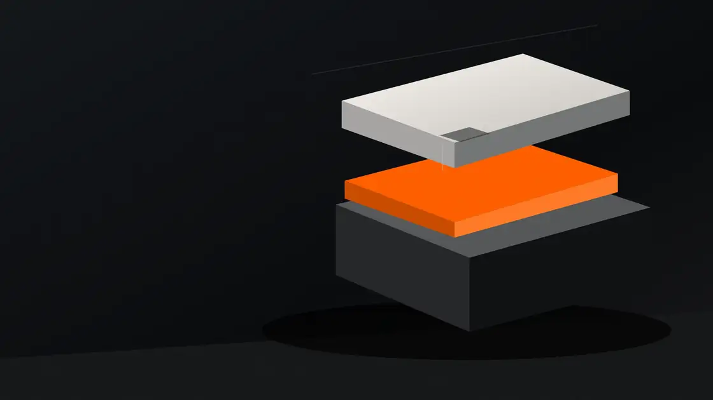

Know what you
don't know.
Optional matching with a route for uncertainty. The browser never gets to declare a match on its own.
Before the CRM · Before the consequences
Your systems remember what they're told. Make the first decision worth remembering.
THE ASSUMPTION
A wrong identity doesn't stay in a form.
It can travel into contracts, billing, ownership, access and reporting. The first record shouldn't be treated as a fact before it's been checked.
Make the boundary visible02 / From signal to decision
Every enquiry starts as a fragment. A name. A source. A context. Nothing should be assumed.
Is this the right person, the right role, the right consent? Uncertainty is not the same as error.
A routed decision, a clear owner and a trace of what happened—before downstream delivery.
A safer route for every signal
Even when identity matching is turned off, the control boundary still matters.
The operator view
Choose an incoming signal. See the decision boundary respond—without hiding uncertainty or pretending the demo is production data.
INCOMING SIGNAL / 0042
A plausible match is not a confirmed identity. Route the ambiguity to a human before delivery.
Not just the perfect lead that flows straight through. The messy signals too.
Optional matching with a route for uncertainty. The browser never gets to declare a match on its own.

Review assignments, clear resolution reasons, and policy controls for decisions that shouldn't be automatic.
Idempotent delivery, a durable outbox, and an append-only audit architecture for verifiable decisions.
Engineering status / public repository
PostgreSQL integration and browser smoke tests run in CI. Production customer deployment and compliance certification are not claimed.
Inspect the implementationMake every handoff defensible.
Explore the clean-room implementation, test the interaction, and see where the control boundary fits in your system.
↗